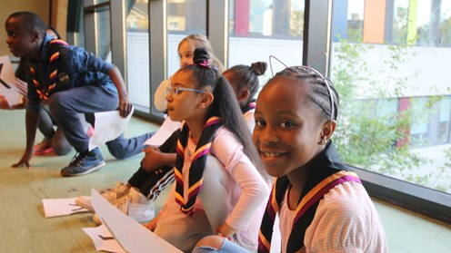

Over 20,000 young people from disadvantaged communities join Scouts
We’re proud to share our latest annual membership figures with you. They show that we’ve had another year of growth, including a marked rise in membership and a wave of new sections opening in areas of deprivation across the UK.
Since 2014, we’ve been focusing on bringing Scouts to some of the UK’s most disadvantaged communities: this is part of our strategy to ensure all of the UK’s young people have access to services that allow them to develop essential life skills. The new figures reveal that we’ve now opened 1,280 sections in areas of deprivation. This means that nearly 20,480 young people from the toughest to reach communities are now a part of the UK Scout movement.
To generate this growth, we’ve employed development officers to work in local communities, seeking out community leaders and meeting places, and setting up these new provisions. They then support the new sections for a few months to ensure they’re self-sustaining and can continue offering high quality youth work once the development team moves onto new challenges.
Examples of new provisions opened in areas of deprivation in key English regions: Young people attending these Scout groups are drawn from the 10% most deprived wards in England.
London – Willesden Scout District
North East - Byker Scout Group
A new Beaver Scout Colony and Cub Scout Pack have been opened, catering for 16 young people – they are supported by seven adult volunteers North West – 1st Wythenshawe Two Beaver Scout Colonies have been opened (48 young people) Two Cub Scout Packs have been opened (48 young people) A Scout Troop has been opened with 20 young people A total of 32 adult volunteers have been recruited Pic 3
East Midlands – 2nd Shirebrook
A Beaver Scout Colony, A Cub Scout Pack and a Scout Troop have been opened catering for 40 young people, supported by five adult volunteers and a full set of Charity Trustees (Chair, Secretary and Treasurer) West Midlands – 148th Birmingham (St Dunstans) Two new Beaver Scout Colonies have been opened, catering for 50 young people, supported by 16 adult volunteers South West - Bridgewater Scout Group Three new sections have been opened, catering for 35 young people spread across Beaver Scout, Cub Scout and Scout sections Eight new volunteer leaders have been recruited to support the work South East - 2nd Southampton In the last year, a new Scout Troop has been opened to cater for nine young people with more being recruited later this term. The Troop are supported by five adults.
East Anglia – 1st Jaywick
Three new sections have been opened catering for 21 young people, spread across Beaver Scout, Cub Scout and Scout sections Eight new volunteer leaders have been recruited
Durham 2020
Our 60 acre site set in beautiful countryside will be our home for Durham’s first international Scout Jamboree between the 1st and 8th August 2020. We’ve got a life changing adventure planned for the 2000+ participants who will join us. Scouts and Explorers from around the world will be immersed in our 7 night, 8 day experience that will have a real buzz, a great range of activities and languages from around the world. Join one of our five sub-camp communities, experience the spectacle of the opening and closing ceremonies and take part in 6 days of exciting and adventurous activities. We’re also inviting Beavers and Cubs from across Durham to take part in their very own Jamboree adventure through our day visitor programme and overnight experiences. To find out more and book visit https://www.durham2020.org.uk/